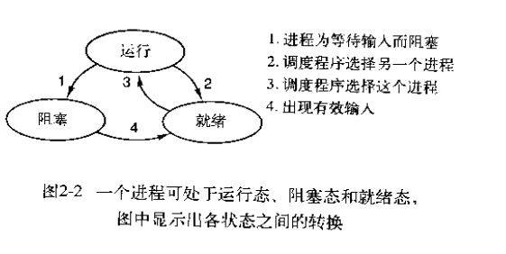
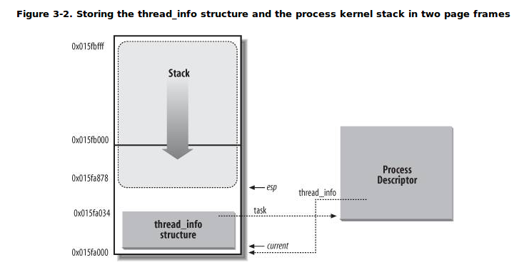

操作系统之进程与线程
进程的概念
进程是正在执行的程序实例，包括程序计数器、寄存器和当前变量值。它是对CPU的抽象。
进程与程序的区别
想象一位程序员在家做菜的过程，进程可以类比为厨师根据菜谱，取到各种原料然后烧制菜肴的动作集合;其中菜谱就是程序（即用适当形式描述的算法），厨师就是处理器（CPU），原料是输入数据。
现在假设他接到电话，有紧急bug需要处理。程序员就记录对照菜谱做到哪了（保存进程当前状态），然后去处理bug（切到更高优先级进程）。这里的关键思想是：一个进程是某种类型的一个活动，它有程序、输入、输出以及状态。单个处理器可以被若干进程共享，它使用某种调度算法决定何时停止一个进程工作，并转而为另一个进程提供服务。
进程的状态
图2-2中可以看到进程的基本状态图，三种状态是：
1）运行态（该进程实际占用CPU）
2）就绪态（可运行，但因为其他进程正在运行而暂时停止）
3）阻塞态（除非某种外部事件发生，否则进程不能运行）

进程的三种状态之间有四种可能的转换关系，如图2-2所示。在操作系统发现进程不能继续运行下去时，发生转换1。（在某些系统中，进程可以执行一个诸如pause的系统调用来进入阻塞状态。其他系统，如UNIX，当进程从没有有效输入的管道或设备文件度数据时，进程自动被阻塞）
转换2和3是由进程调度程序引起的，调度行为与选择的调度算法有关，进程调度程序是操作系统的一部分。
当进程等待的一个外部事件发生时（如一些输入到达），则发生转换4。如果此时没有其他进程运行，则立即触发转换3，该进程便开始运行。否则程序处于就绪态，等待CPU空闲时，调度该进程执行。
进程的实现
为了实现进程模型，操作系统维护一张表格，即进程表（又叫进程控制块PCB）。每个进程占用一个进程表项，该表项包含了进程状态的重要信息，包括程序计数器、堆栈指针、内存分配状况、打开的文件状态、账号和调度信息，以及其他进程由运行态转换到就绪态或阻塞态时所必须保存的信息，以保证该进程随后能再次启动。
| 进程管理 | 存储管理 | 文件管理 |
|---|---|---|
| 寄存器 | 正文段指针 | 根目录 |
| 程序计数器 | 数据段指针 | 工作目录 |
| 程序状态字 | 堆栈段指针 | 文件描述符 |
| 堆栈指针 | 用户ID | |
| 进程状态 | 组ID | |
| 优先级 | ||
| 调度参数 | ||
| 进程ID | ||
| 父进程 | ||
| 进程组 | ||
| 信号 | ||
| 进程开始时间 | ||
| 使用的CPU时间 | ||
| 子进程的CPU时间 | ||
| 下次报警时间 | ||
| ———— |
了解了进程表，下面阐述单个CPU是如何维护多个进程的顺序执行：
在内存底部的固定区域，存放着与I/0类关联的称为中断向量的表格，它包含中断服务程序的入口地址。假设一个磁盘中断发生时，用户进程3正在运行，则中断硬件将当前进程的程序计数器、程序状态字、少量寄存器（EFLAGS标志寄存器、CS代码段寄存器、IP指令指针寄存器、SS堆栈段寄存器、ESP栈顶指针）等压入堆栈，计算机随即跳转到中断向量所指向的地址，接着中断服务例程接管一切工作。
所有中断都从保存寄存器开始，通常将其保存在当前进程的进程表项里。随后会从堆栈中删除由中断硬件机制存入堆栈的信息，并将堆栈指向一个进程处理程序所使用的临时堆栈。之后，调用一个C过程处理特定中断类型剩下的工作。在完成有关工作后，大概会使某些进程就绪，接着调用调用调度程序，决定随后运行哪个进程。随后将控制权转给一段汇编代码，为当前进程装入寄存器已及内存映射并启动该进程。
中断发生后操作系统底层的工作步骤：
1.硬件压入堆栈程序计数器等
2.硬件从中断向量装入新的程序计数器
3.汇编语言过程保存寄存器值
4.汇编语言过程设置新的堆栈
5.C中断服务例程运行（典型地读和缓冲输入）
6.调度程序决定下一个运行的程序
7.C过程返回至汇编代码
8.汇编语言过程开始运行新的当前进程
用户栈与内核栈
每个进程会有两个栈，一个用户栈，存在于用户空间，一个内核栈，存在于内核空间。
当进程在用户空间运行时，cpu堆栈指针寄存器里面的内容是用户堆栈地址，使用用户栈；当进程在内核空间时，cpu堆栈指针寄存器里面的内容是内核栈空间地址，使用内核栈。内核在创建进程，创建task_struct的同时，会为进程创建内核栈（地址保存在stack中），在内核栈的栈顶存储了thread_info结构，其中包含了task字段，从而查找到该进程相关数据信息，如下图所示：

从上图可以看到，内核栈是从该内存区域的顶层向下（从高地址到低地址）增长的，而thread_info结构则是从该区域的开始处向上（从低地址到高地址）增长。内核栈的栈顶地址存储在esp寄存器中。通过将esp与上该区域的大小，从而获取thread_info结构。
1 | 内核栈定义： |
当进程因为中断或者系统调用而陷入内核态时，进程所使用的堆栈也要从用户栈转到内核栈。
进程陷入内核态后，就会使用其TSS段中给出的特权级0的堆栈指针tss.ss0、tss.esp0，即内核栈。原用户栈指针会被保存在内核栈中。而当从内核态返回用户态时，就会恢复使用用户态的堆栈。这样就实现了内核栈和用户栈的互转。
那么，我们知道从内核转到用户态时用户栈的地址是在陷入内核的时候保存在内核栈里面的，但是在陷入内核的时候，我们是如何知道内核栈的地址的呢？
关键在进程从用户态转到内核态的时候，进程的内核栈总是空的。这是因为，当进程在用户态运行时，使用的是用户栈，当进程陷入到内核态时，内核栈保存进程在内核态运行的相关信息，一旦进程返回用户态后，内核栈中保存的信息就无效了，因此每次进程从用户态陷入内核的时候得到的内核栈都是空的。所以在进程陷入内核的时候，直接把内核栈的栈顶地址给堆栈指针寄存器就可以了。
本文链接：操作系统之进程与线程
作者：Vskyman
出处：https://vskyman.github.io/
本文基于 知识共享署名-相同方式共享 4.0
国际许可协议发布，欢迎转载，演绎或用于商业目的，但是必须保留本文的署名及链接。